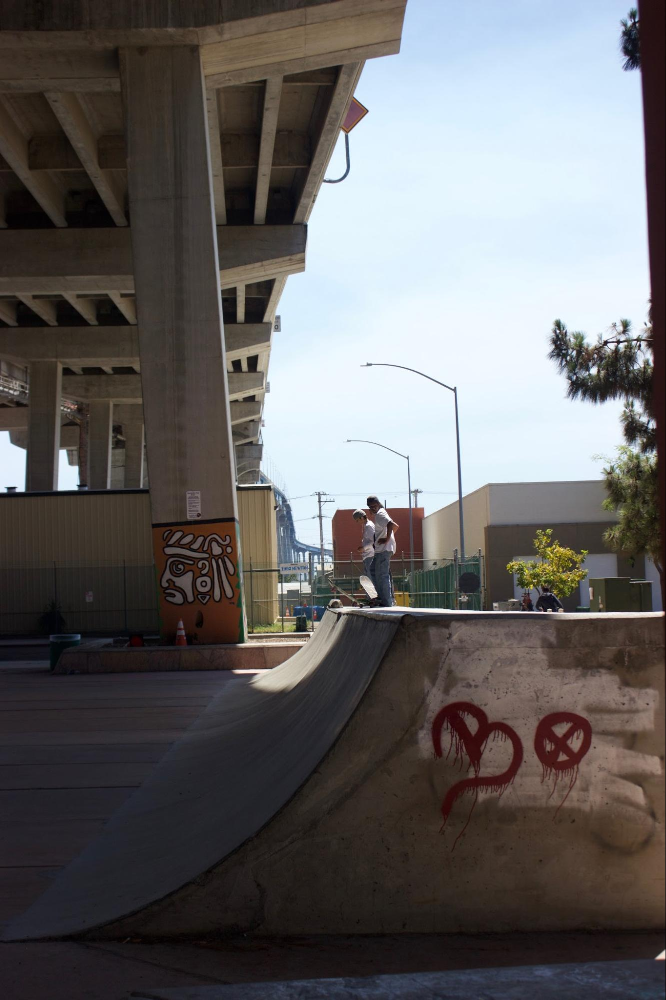

Summary: Most great cities are considered attractives places to live because they offer favorable conditions for business, culture, and leisure. However, a great city should also be a healthy place without environmental hazardous and one that provides opportunity to live a healthy lifestyle. For the residents of Barrio Logan, adequate open space resources with land devoted to green infrastructure is essential for this historical neighborhood to thrive, yet pressures from military and industry expansion has prevented livable conditions from developing.

Located near the waterfront, Barrio Logan has suffered invasion after invasion by the military, Anglo-American business, and city officials.
One of the only centrally located green spaces in Barrio Logan aside from Chicano Park is Cesar Chavez Park. However, Cesar Chavez Park is adjacent to a pollutant-heavy shipyard and pier that makes it unwelcoming to community members.

To understand how a multi-family residential community developed to a dense industrial zone, we have to go back to its inception during the 1930s through the 1960s. By 1939, real estate agents were partnering with the Federal Housing Administration (FHA) and it successor the Home Owners’ Loan Corporation (HOLC) to draw maps used to advise city officials and homeowners on which community to invest federal money. The HOLC evaluation divided neighborhoods into four categories: Best, Still Desirable, Definitely Declining, and Hazardous, or A, B, C and D. On the so-called Residential Security maps on which its survey results were recorded, these were color-coded green, blue, yellow, and red, respectively. Neighborhoods like Logan Height, were coded red, or “hazardous,” for a number of reasons, one of which was the presence of other “inharmonious” racial or social groups. These maps were the origins of redlining, one of the primary tools of housing segregation.
The use of eminent domain for federally subsidized highways to run through inner neighborhoods, resulted in significant upheaval of the same neighborhood of color, like Logan Heights, who fell to victim to redlining. Eminent domain, a government policy used in the name of progress, and often part of urban renewal, gives the government authority to take private for public use as long as there is just compensation. Following the 1956 National Interstate and Defense Highway Act, the construction of the Interstate 5 and the Coronado Bridge through eminent domain in 1964 bisected the neighborhood of Logan Heights and what is now known as Barrio Logan.
The City of San Diego promised the residents of Barrio Logan that the land beneath the bridge could be preserved for a park. Instead, the city rolled back on their promised and attempted to build a Highway Patrol Station. In April 22, 1970, city workers began clearing the land for the Highway Patrol station. Barrio Logan residents and activists immediately mobilized and occupied the undeveloped land until city officials agreed to honor the park deal. Chicano Park, like MacArthur Park in Los Angeles, reflects the struggles, hopes, and triumphs of a community coming together for justice, democracy, and livability for all and a new movement for a new urban landscaping.
Given the enormity of the task and the cultural importance of the Park, I had the honor of interviewing Jaime Velazquez, who lives two blocks away from Chicano Park, to find out his vision on how Barrio Logan and its residents can create an unorthodox green infrastructure in a dense industrial area. “Everyone can do something” Jaime said, “even a tiny contribution. We need to educate our community members [about] respecting their own community.” Even if that means simply cleaning your own block, picking up trash, or creating a small garden, for Jaime, these are small actions that can have an enormous impact on how residents interact with their community and with the environment.
Sitting in the back of his humble backyard, Jaime emphasized the importance of gardens and gardening in Barrio Logan. “There [are] so many houses but there is no green space” he remarked, “The garden makes people feel a sense of belonging and connecting to the place.” There is now a renaissance of urban community gardens and urban agriculture sprouting in cities across the nation, fueled in part by hard times brought by the global financial crisis and by the ongoing dearth of fresh fruits and vegetables in inner-city neighborhoods. Community gardens may also serve as incubators of social capital and as catalysts for organizing campaigns to promote low-cost housing, neighborhood violence, promote awareness about air pollution, or any of a number of public projects.
For Jaime Velazquez, who will be retiring in the next of couple years, he knows the importance of growing green spaces and gardens in urban neighborhoods. Once he retires, he hopes to use that available time to help community members in creating their own garden in their own home. Forging a possible partnership with Roger’s Community Garden, Jaime’s garden dream can become a reality. In Jaime’s garden, people will be able to weed, water, and cook to feed their families, but they will also tend to themselves, forging new relationships, cultivating support networks, and re-creating memories and feelings of home that they left thousands of miles behind the borderline.